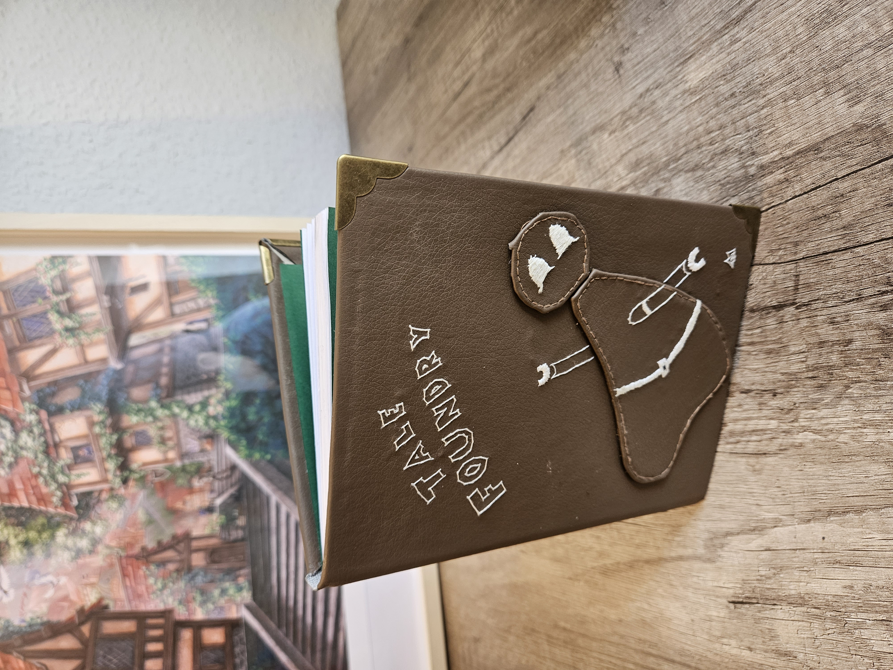

Welcome to my little Project Archive!
I've been diving into some different hobbies lately. To keep track of all the finished projects I've decided to set up this archive.

Bookbinding
The art of sowing your own textblock and crafting a suitable cover for it.

Hand Sowing
Why use a sowing machine if you have needles and thread at hand?
Worldbuilding
Forging your own world - civilisations, culture, religion. You can even create your own herb!

Various
For all the stuff I don't want to set up a category.